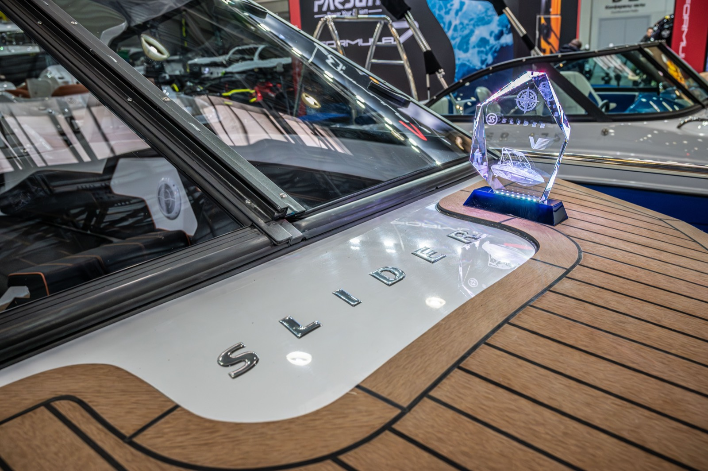

Открываем весну!
С 26 февраля по 1 марта в Крокус Экспо состоится Международная выставка катеров и яхт «Московское Боут Шоу», где наша верфь представит весь модельный ряд, новинки, а также проведет розыгрыш призов. Ждем Вас на нашем стенде В017!